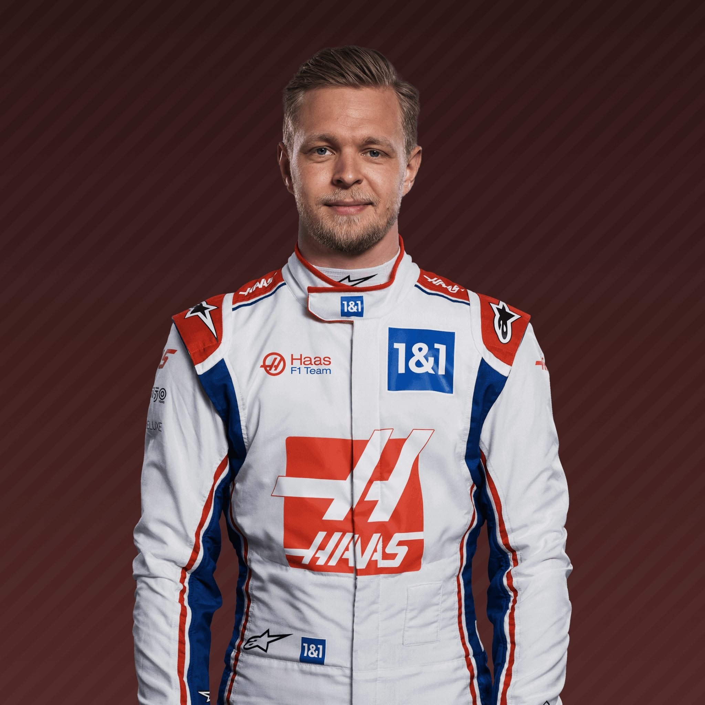
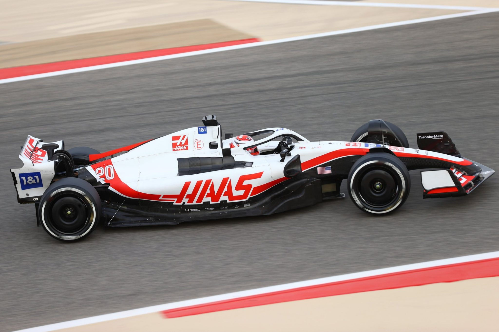
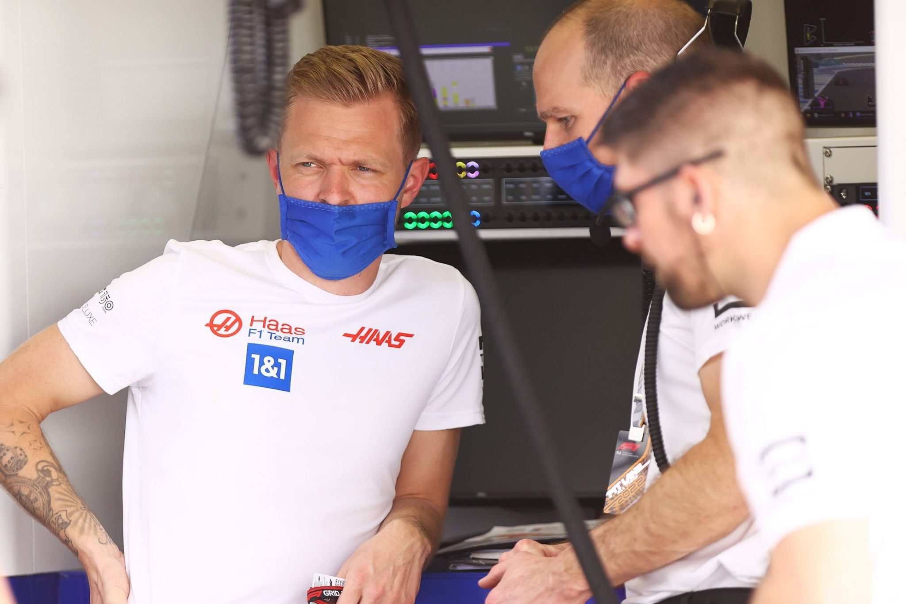
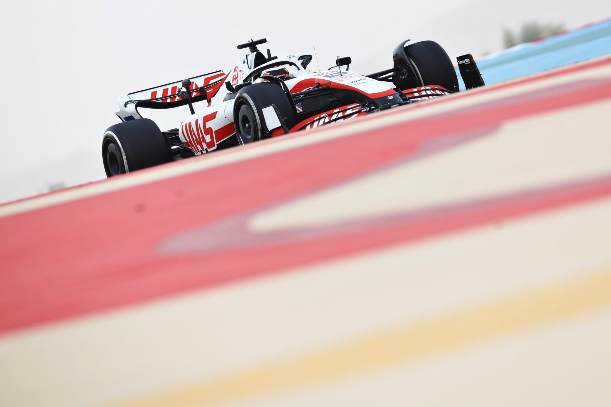
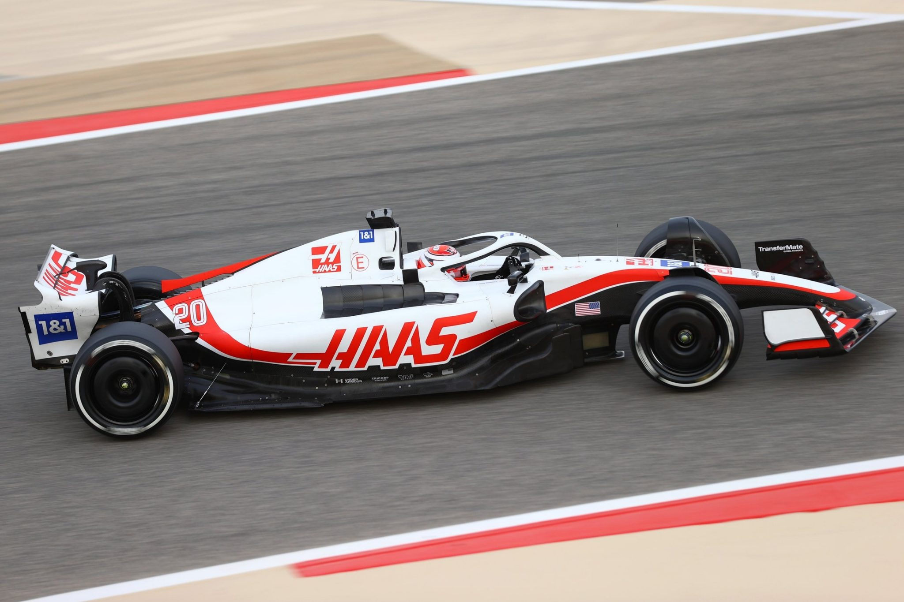
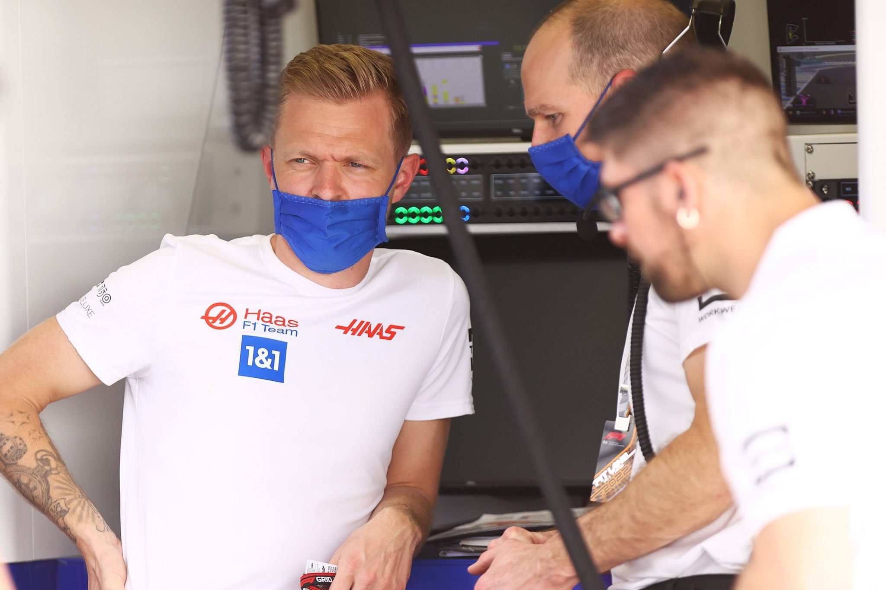
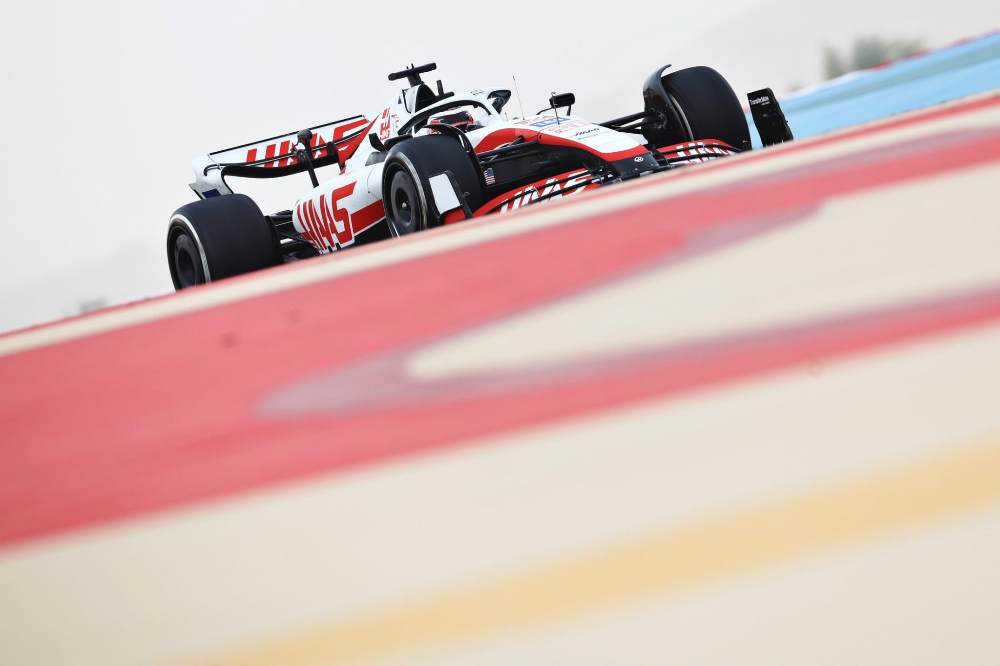

Call him a lone ranger or a maverick, but Magnussen is back in Formula 1 for one reason only – to race.
He may be a second-generation F1 driver – following his father, Jan, onto the grid
but Magnussen’s idols are from the ‘golden era’ of Grand Prix racing
when the likes of Juan Manuel Fangio and Stirling Moss risked it all for the love of the sport.
The Roskilde racer’s own prowess was proven on debut for McLaren, who guided him through the junior ranks,
when he cruised into the top-three at the 2014 Australian Grand Prix, becoming the first Dane to claim a podium in F1.
Other champagne moments have been more difficult to find, as he left McLaren behind for a season with Renault,
before settling in for four among kindred spirits at Haas. And now he’s back with the US team
after a year away in the States, racing Indy and sportscars among other things.
His meaty manoeuvres and elbows-out approach have earned him a bad-boy reputation on track,
omething that still leaves him baffled. Out of the car Magnussen is laidback and affable.
After all he has his dream job – and he is only here to race.
  
| Team | Haas F1 Team |
|---|---|
| Country | Denmark |
| Podiums | 1 |
| Points | 182 |
| Grand Prix entered | 140 |
| World Championships | N/A |
| Highest race finish | 2 (x1) |
| Highest grid position | 4 |
| Date of birth | 05/10/1992 |
| Place of birth | Roskilde, Denmark |
Biography
Call him a lone ranger or a maverick, but Magnussen is back in Formula 1 for one reason only – to race.
He may be a second-generation F1 driver – following his father, Jan, onto the grid
but Magnussen’s idols are from the ‘golden era’ of Grand Prix racing
when the likes of Juan Manuel Fangio and Stirling Moss risked it all for the love of the sport.
The Roskilde racer’s own prowess was proven on debut for McLaren, who guided him through the junior ranks,
when he cruised into the top-three at the 2014 Australian Grand Prix, becoming the first Dane to claim a podium in F1.
Other champagne moments have been more difficult to find, as he left McLaren behind for a season with Renault,
before settling in for four among kindred spirits at Haas. And now he’s back with the US team
after a year away in the States, racing Indy and sportscars among other things.
His meaty manoeuvres and elbows-out approach have earned him a bad-boy reputation on track,
omething that still leaves him baffled. Out of the car Magnussen is laidback and affable.
After all he has his dream job – and he is only here to race.
Gallery
  